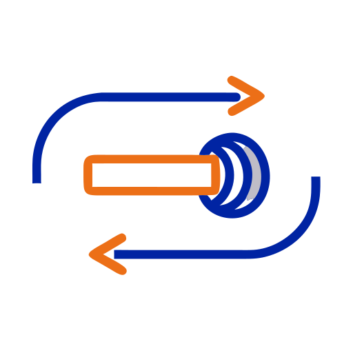

Raccolta Gare di Fisica
Aree
Argomenti
Metodi
Abilità
Objects
Prove
Cerca
Raccolta Gare di Fisica
Search
Cerca
Tema scuro
Tema chiaro
Modalità lettura
Esplora
Home
❯
topics
❯
Electromagnetic Induction
Electromagnetic Induction
Properties
1
tags
graph/topic
02 lug 2026
1 minuto
graph/topic

Topic
—
330
problemi/quesiti.
Problemi e quesiti
Vista grafico
Link entranti
Canada 1994 Locale Quiz — Quesito 22
Canada 1996 Locale Quiz — Quesito 25
Canada 1997 Locale Quiz — Quesito 16
Canada 1998 Locale Quiz — Quesito 13
OII 2012 1° Livello — Quesito 38
OII 2013 1° Livello — Quesito 2
OII 2014 1° Livello — Quesito 15
OII 2015 1° Livello — 1liv15T def.pdf — Quesito 16
OII 2016 1° Livello — Quesito 28
OII 2017 1° Livello Quiz — Quesito 25
OII 2018 1° Livello Quiz — Quesito 13
OII 2018 1° Livello Quiz — Quesito 26
OII 2019 1° Livello Quiz — Quesito 5
OII 2019 1° Livello Quiz — Quesito 19
OII 2020 1° Livello Quiz — Quesito 18
OII 2022 1° Livello — Quesito 40
OII 2024 1° Livello Quiz — Quesito 28
OII 2025 1° Livello — Quesito 17
OII 2026 1° Livello — Quesito 8
OII 2004 1° Livello Quiz — Quesito 9
OII 2005 1° Livello Quiz — Quesito 22
OII 2006 1° Livello — Quesito 33
OII 2007 1° Livello — Quesito 10
OII 2009 1° Livello — Quesito 14
OII 2010 1° Livello Quiz — Quesito 14
Canada 2000 — Quesito 7
Canada 2001 — Quesito 12
Canada 2001 — Quesito 28
Canada 2002 — Quesito 12
Canada 2003 — Quesito 25
Canada 2004 — Quesito 23
Canada 2004 — Quesito 27
Nordic 2005 — Quesito 2
Canada 2005 — Quesito 21
Canada 2006 — Quesito 10
Spagna 2007 — Quesito 11
USA 2007 — Quesito 6
Canada 2007 — Quesito 20
Canada 2007 — Quesito 27
Canada 2008 — Quesito 17
Nordic 2009 — Quesito 8
USA 2009 — Quesito 1
USAPhO 2009 Semifinal - Quesito 1
USA 2010 — Quesito 6
USAPhO 2010 Semifinal - Quesito 6
Nordic 2011 — Quesito 3
USAPhO 2011 — Quesito 5
UK 2011 — Quesito 2
USA 2012 — Quesito 6
USAPhO 2012 - Quesito 6
UK 2012 — Quesito 14
Canada 2013 — Quesito 3
UK 2013 — Quesito 3
Nordic 2014 — Quesito 1
Nordic 2014 — 2014 est-fin_2014sol.pdf
NBPhO 2015 - Quesito 9: Solenoids
UK 2015 — Quesito 4
UK 2015 — Quesito 12
CAP 2016 — Quesito 19
UK 2016 — Quesito 8
[CAP-HS 2017 National Prize Exam] — Quesito 16
BPhO 2017 — Quesito 6
CAP 2019 — Quesito 15
Russia 2020 — Quesito 1
Russia 2020 — Quesito 3
USAPhO 2020 — Quesito 1
CAP 2022 — Quesito 6
OII 2022 1° Livello Quiz — Quesito 40
USAPhO 2023 — Quesito 2
CAP 2024 Nazionale — 2024_CAP_Exam_with_solutions.pdf
CAP 2024 Nazionale — 2024_CAP_Exam_with_solutions_May62025.pdf
OII 2024 1° Livello — Quesito 28
Spagna 2025 — 2025 Examen resuelto.pdf
CAP2025 2025 Nazionale — 2025_CAP_Exam_with_solutions.pdf
[CAP 2026 National] — 2026_CAP_Exam_with_solutions.pdf
OII 2019 2° Livello — Problema 3
OII 2002 2° Livello Quiz — Problema 8
Svizze 2025 — Quesito 19
Svizze 2025 — Quesito 23
Svizze 2025 — Quesito 19
IPhO 2012 — Quesito 1
[IPhO-DE-2Rd 2017 Round 2] — 48_IPhO_2017_2Rd_Aufgaben_Loesungen_web.pdf
IPhO 2017 — Quesito 3
IPhO 2021 — Quesito 7
IPhO-DE-2Rd-2021 2021 Round 2 — 51_IPhO_2021_2Rd_Aufgaben_Loesungen_web.pdf
IPhO 2023 — Quesito 2
IPhO 2023 — Quesito 2
IPhO 2024 — Quesito 3
IPhO 2024 — Quesito 3
GaS 2024 Allenamento Online — Problema 7
APhO 2000 — Teorica — Quesito 3
APhO 2005 — Sperimentale — Quesito 2
APhO 2007 - Sperimentale - Quesito 2
APhO 2009 — Teorica — Quesito 2
APhO 2011 — Sperimentale — Quesito 1
APhO 2011 — Teorica — Quesito 1
APhO 2012 — Sperimentale — Quesito 2
APhO 2012 — Teorica — Quesito 1
APhO 2017 — Teorica — Quesito 3
APhO 2025 — Sperimentale — Quesito 1
Russia 2020 — Quesito 1
BPhO 2002 — Quesito 5
BPhO 2004 Locale Round 1 — Quesito 4
BPhO 2007 Locale Round 1 — Quesito 6
BPhO 2008 Locale Round 1 — Quesito 1
BPhO 2010 — Quesito 4
Russia 2013 — Quesito 3
Russia 2018 — Quesito 1
OII 2009 Nazionale — Problema 4
OII 2017 Nazionale — Problema 1
OII 2017 Nazionale — Problema 2
Russia 2017 — Quesito 4
Argent 2004 Locale — Quesito 30
Argent 2004 Locale — Quesito 98
Argent 2006 Locale — Quesito 157
Argent 2007 Locale — Quesito 98
Argent 2008 Locale — Quesito 157
Argent 2008 Locale — Quesito 175
Argent 2008 Locale — Quesito 34
Argent 2008 Locale — Quesito 99
Argent 2010 Locale — Quesito 102
Argent 2012 Locale — Quesito 118
Argent 2014 Locale — Quesito 152
Argent 2015 Locale — Quesito 174
Argent 2016 Locale — Quesito 187
Argent 2017 Locale — Quesito 184
Argent 2019 Locale — Quesito 174
OII na Sperimentale — Problema 1
Nordic na — Quesito 8
Nordic na — Quesito 8
Russia 2018 — Quesito 3
Russia 2019 — Quesito 2
OII na Teorica — Problema 1
OII 2020 Teorica — Problema 1
OII 2024 Sperimentale — Problema 2
OII na Sperimentale — Problema 1
Spagna 2015 — Quesito 5
Spagna 2017 — Quesito 1
Spagna 2021 — Quesito 1
Spagna 2024 — Quesito 4
OII na '' — Problema 2
Brasil 2025 — fase1_n3.pdf
Svizze 2025 — Quesito 1
Svizze 2025 — Quesito 1
GaS 2023 Nazionale Teorica — Problema 3
HKPhO 2010 — Quesito 17
India 2008 — INChO-2008.pdf
INJSO 2015 — Problema 22
INJSO 2018 — Problema 17
INPhO 2008 — Problema 7
INPhO 2010 — Problema 4
INPhO 2012 — Problema 4
INPhO 2019 — Problema 5
INPhO 2019 — Problema 7
INPhO 2020 — Problema 2
INPhO 2024 — Problema 4
INPhO 2025 — Problema 2
IPhO 2026 — Quesito 8
IPhO 2026 — Quesito 8
IPhO na '' — Quesito 21
IPhO na '' — Quesito 22
IPhO na '' — Quesito 23
IPhO na — Quesito 21
IPhO na — Quesito 22
IPhO na — Quesito 23
iberoa 1991 — Quesito 27
iberoa 1991 — Quesito 35
iberoa 1991 — Quesito 46
iberoa 1991 — Quesito 72
OII 1995 1° Livello Quiz — Loc95 (2 files merged).pdf — Quesito 24
OII 2001 Nazionale Teorica — Problema 1
OII 2003 Nazionale Teorica — Problema 2
OII 2012 Nazionale Teorica — Problema 3
OII 2012 Nazionale Teorica — Problema 3
OII 2012 Nazionale Teorica — Problema 11
OII 2012 Nazionale Teorica — Problema 12
OII 2012 Nazionale Teorica — Problema 13
OII 2012 Nazionale Teorica — Problema 14
OII 2012 Nazionale Teorica — Problema 15
OII 2012 Nazionale Teorica — Problema 16
OII 2012 Nazionale Teorica — Problema 17
OII na Nazionale Sperimentale — Problema 1
OII 2016 Nazionale Teorica — Problema 2
OII na Nazionale Sperimentale — Problema 2
OII 2018 Nazionale Teorica — Problema 4
OII 2018 Nazionale Teorica — Problema 4
OII 2019 Nazionale — Problema 3
OII 2024 Nazionale Teorica — Problema 3
OII na Nazionale Teorica — Problema 2
Brasil 2017 — nivel3.pdf
Brasil 2006 — Quesito 6
NSEA 2023 — Problema 12
NSEJS 2023 — Problema 36
NSEJS 2024 — Problema 44
NSEP 2023 — Problema 33
NSEP 2023 — Problema 55
NSEP 2024 — Problema 49
NSEP 2025 — Problema 56
NSEP 2025 — Problema 60
OBF 2018 '' — Quesito 10
OBF 2018 '' — Quesito 11
OBF 2018 — Quesito 7
OBF 2023 — Quesito 7
OBF 2024 — Quesito 8
OBF 2014 — OBF2014_F1_Gabfinal_N1.pdf
OBF 2014 — OBF2014_F1_Gabfinal_NIII.pdf
OBF 2014 — OBF2014_F1_Gabfinal_NIII.pdf
OBF 2014 — OBF2014_F1_NI_V1.pdf
OBF 2014 — Quesito 6
OBF 2014 — OBF2014_F1_NIII_V1.pdf
OBF 2014 — Quesito 2
OBF 2015 — OBF2015_ProvaN3_3fase.pdf
OBF 2015 — Quesito 8
Brasil 2006 — Quesito 1
Brasil 2015 — OIFTeoria2.pdf
Brasil 2006 — Quesito 3
Spagna 2022 — Quesito 2
OPhO 2020 — Invitational — Quesito 10
OPhO 2020 — Open — Quesito 12
OPhO 2023 — Open — Quesito 19
OPhO 2023 — Open — Quesito 28
OPhO 2024 — Open — Quesito 31
OPhO 2025 — Open — Quesito 15
Spagna 2008 — Quesito 1
Spagna 2008 — Quesito 2
Spagna 2008 — Quesito 3
Spagna 2008 — Quesito 4
Spagna 2008 — Quesito 5
Spagna 2008 — Quesito 6
Spagna 2008 — Quesito 7
Spagna 2008 — Quesito 8
Spagna 2008 — Quesito 9
Spagna 2008 — Quesito 10
Spagna 2008 — Quesito 11
Spagna 2008 — Quesito 12
Spagna 2008 — Quesito 13
Spagna 2008 — Quesito 14
Spagna 2008 — Quesito 15
Spagna 2008 — Quesito 16
Spagna 2008 — Quesito 17
Spagna 2008 — Quesito 18
Spagna na '' — Quesito 1
Spagna 2008 — Quesito 1
Spagna 2014 — Quesito 1
Spagna 2014 — Quesito 2
Spagna na — Quesito 1
Spagna na — Quesito 6
Spagna na — Quesito 1
Spagna 2006 — Quesito 1
Giappo na — Quesito 24
PLANCKS 2016 — Bucharest — Quesito 4
PLANCKS 2024 — Dublin — Quesito 5
OII na Teorica — Problema 1
OII na Teorica — Problema 2
OII na Teorica — Problema 3
OII na Teorica — Problema 4
OBF 2015 — Prova NÃviel3 OBF 2015 fase2.pdf
OBF 2015 — Prova NÃviel3 OBF 2015 fase2.pdf — Quesito 7
OBF 2015 — Prova_OBF2015_F1_Nivel_IIIa.pdf
Argent 1996 — Quesito 3
Russia 2019 — Quesito 3
Russia 2019 — Quesito 4
Russia 2019 — Quesito 5
Russia 2019 — Quesito 6
Russia 2019 — Quesito 9
Russia 2018 — Quesito 4
Russia 2020 — Quesito 4
Russia 2020 — Quesito 5
Russia 2021 — Quesito 4
SJPO 2010 — Quesito 20
SJPO 2011 — Quesito 34
SJPO 2012 — Quesito 31
SJPO 2013 — Quesito 33
SJPO 2013 — Quesito 47
SJPO 2015 — Quesito 43
SJPO 2015 — Quesito 44
SJPO 2016 — Quesito 42
SJPO 2017 — Quesito 35
SJPO 2017 — Quesito 43
SJPO 2022 — Quesito 38
SJPO 2023 — Quesito 26
SJPO 2023 — Quesito 27
SJPO 2023 — Quesito 28
SJPO 2024 — Quesito 38
SPhO 2013 — Quesito 6
SPhO 2013 — Quesito 8
SPhO 2016 — Quesito 3
SPhO 2020 — Quesito 3
SPhO 2021 — Quesito 3
SPhO 2021 — Quesito 4
SPhO 2024 — Quesito 4
OII 2005 Nazionale Teorica — Problema 7
OII 2005 Nazionale Teorica — Problema 8
OII 2005 Nazionale Teorica — Problema 10
OII 2005 Nazionale Teorica — Problema 3
OII 2007 Nazionale Teorica — Problema 6
OII 2007 Nazionale Teorica — Problema 7
OII 2007 Nazionale Teorica — Problema 8
OII 2007 Nazionale Teorica — Problema 2
Brasil 2016 — TeoN3f3.pdf
Brasil 2006 — Quesito 6
Brasil 2006 — Quesito 8
Brasil 2017 — Teoria2Final2017.pdf
Brasil 2017 — Quesito 3
OII na Nazionale Sperimentale — testo finale.pdf — Problema 4
OII na Sperimentale — Problema 1
OII na Teorica — Problema 1
OII na Teorica — vvisoV-IPhO16 - Theory Q2 — Problema 1
WoPhO 2012 — Quesito 7
WoPhO 2013 — Quesito 1